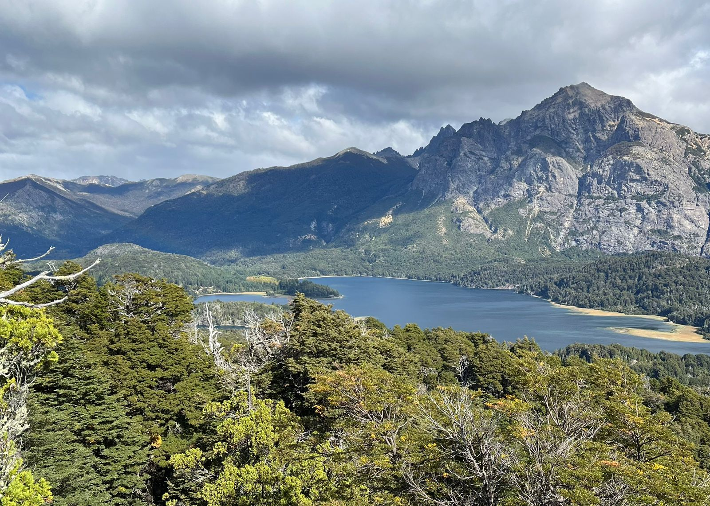
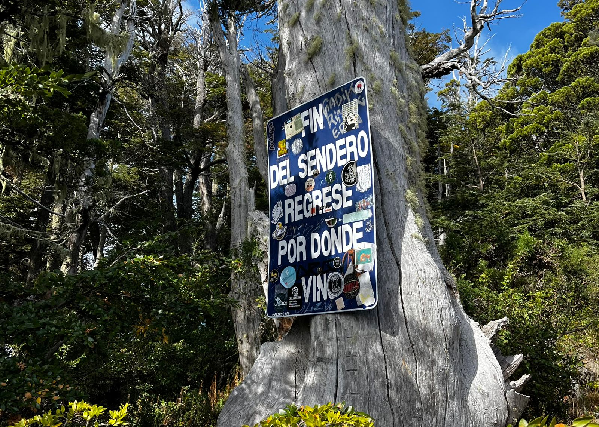

Cerro Llao Llao
Información:
El Cerro Llao Llao se encuentra en el parque municipal del mismo nombre, al oeste de la ciudad de Bariloche, en lo que se conoce como Circuito Chico. Se accede a él por un sendero que tiene una bifurcación: por un lado la cima del cerro y por el otro Villa Tracul.
En una tramo de unas dos horas, atravesarás Villa Tacul, una bahía de aguas cristalinas, y luego podrás seguir el ascenso hasta el mirador. En total podrás hacer una ruta que sumará unos 10 kilómetros entre ida y vuelta, siempre señalizada..
No es un sendero de gran dificultad, incluso es posible con niños de cierta edad o para hacer en familia. El desnivel máximo no alcanza los 250 metros. Es una caminata de dificultad baja, que se puede hacer todo el año si hay buen clima. El tiempo para hacerlo es de unas dos a tres horas en total. Aunque a ello habrá que sumar las pausas en el camino, algún momento de picnic en una playa, etc.
En caso de mal clima, deberás prestar atención a las indicaciones en el inicio del sendero en el acceso al parque, donde hay un sitio de informes con guardaparques. Los días de mucho viento también pueden tener su riesgo, ya que hay árboles o ramas que pueden caer.